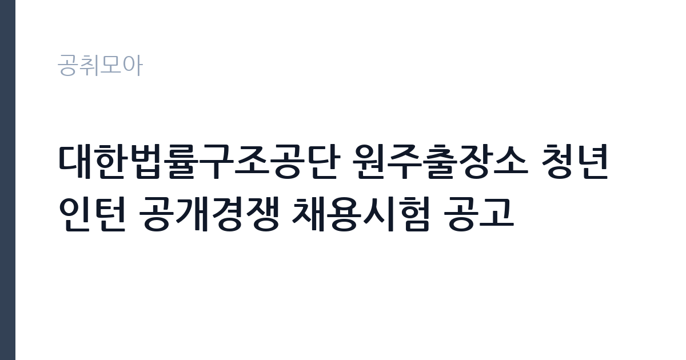

[공공기관] 대한법률구조공단 원주출장소 청년인턴 공개경쟁 채용시험 공고
대한법률구조공단 · 강원 · 마감 2026-10-27 (D-15) · 출처 잡알리오

한눈에 보는 모집 조건
| 기관 | 대한법률구조공단 |
|---|---|
| 공고명 | 대한법률구조공단 원주출장소 청년인턴 공개경쟁 채용시험 공고 |
| 고용형태 | 청년인턴(체험형) |
| 근무지 | 강원 |
| 게시일 | 2026-10-12 |
| 마감일 | 2026-10-27 (D-15) |
지원자격, 이렇게 읽으세요
- 공공기관 채용공시
- 세부 조건은 원문 공고문 확인
지원 연령은 채용공고일 기준 만 18세 이상 34세 이하이며, 성별과 학력, 거주지 제한이 없습니다. 학력 제한이 없다는 것은 고졸과 중퇴, 대학 재학과 졸업 등 학력 조건과 무관하게 지원할 수 있다는 의미입니다. 거주지 제한도 없으므로 강원 지역 외 거주자도 지원 가능합니다. 지원 시 주의하실 점은 연령 기준일입니다. 공고일 기준으로 만 나이를 계산하므로, 생년월일이 경계에 있는 분은 공고문의 연령 계산 방식을 정확히 확인하시기 바랍니다. 체험형 인턴은 채용형과 달리 정규직 전환과 직접 연결되지 않는 과정이므로, 해당 취지를 이해하고 지원하시기 바랍니다. 제출 서류와 접수 방법은 원문 공고문에서 확인하시기 바랍니다.
이 공고의 포인트
해당 공고의 첫 번째 포인트는 진입장벽이 낮다는 점입니다. 학력과 거주지, 성별 제한이 없고 연령 요건만 충족하면 지원할 수 있어 청년층 누구나 도전할 수 있습니다. 두 번째 포인트는 법조 분야 실무 체험의 희소성입니다. 대한법률구조공단은 실제 법률구조 사건을 다루는 기관이므로, 법학 전공자와 로스쿨 진학 준비생, 법률사무 취업을 희망하는 분들께 현장감 있는 경험이 됩니다. 세 번째 포인트는 공공기관 인턴 경력의 활용도입니다. 체험형 인턴 경력은 이후 공공기관 채용 지원 시 직무 연관 경험으로 기술할 수 있어 취업 준비 전반에 도움이 됩니다. 모집 근무지가 원주출장소로 특정되어 있으므로, 강원 지역 거주자와 해당 지역 정착 희망자에게 접근성이 좋습니다.
전형은 어떻게 진행되나
전형 절차의 세부 내용은 원문 공고문에서 확인하시기 바랍니다. 일반적으로 공공기관 청년인턴 채용은 서류전형과 면접전형의 순서로 진행됩니다. 서류전형에서는 지원서와 자기소개서를 중심으로 지원 동기와 기본 소양을 평가하므로, 법률구조라는 기관 임무에 대한 이해를 진정성 있게 서술하시기 바랍니다. 면접전형에서는 인턴으로서의 자세와 민원 응대 소양, 조직 적응력을 평가하는 경우가 많습니다. 접수 마감일이 2026년 10월 27일이므로, 지원서 작성에 남은 기간을 활용하시기 바랍니다. 이후 일정은 공고문과 공단 채용 게시판 안내를 확인하시기 바랍니다.
원문에서 확인한 전형 방식
◇ 연령 : 만 18세 이상 34세 이하(채용공고일 기준) ◇ 성별·학력 및 거주지 제한 없음
이런 분께 추천해요
- 법학 전공자와 로스쿨 진학 준비생으로 법률 현장 경험을 쌓고 싶은 분께 추천합니다.
- 공공기관 취업 준비 중 실무 경력과 직무 연관 경험을 만들고 싶은 청년들께 추천합니다.
- 강원 원주 지역 거주자로 통근이 가능하고 민원 응대와 사무 보조 업무에 관심 있는 분께 추천합니다.
지원 전 체크리스트
- 연령 기준일 확인 항목입니다. 공고일 기준 만 18세 이상 34세 이하 해당 여부를 정확히 계산하시기 바랍니다.
- 체험형 취지 이해 항목입니다. 정규직 전환과 연결되지 않는 체험 과정임을 확인하고 지원하시기 바랍니다.
- 근무지 확인 항목입니다. 원주출장소 근무가 가능한지 통근과 거주 계획을 점검하시기 바랍니다.
- 제출 서류 완비 항목입니다. 원문 공고문의 제출 서류 목록을 확인해 빠짐없이 준비하시기 바랍니다.
모집 일정과 제출 타이밍
공고 게시일은 2026년 10월 12일이며 접수 마감일은 10월 27일입니다. 접수 기간이 약 2주로 여유가 있으나, 자기소개서 완성도를 높이는 데 시간을 투자하시기 바랍니다. 이후 전형 일정은 원문 공고문과 공단 채용 게시판 안내를 수시로 확인하시기 바랍니다.
직무 이해하기: 공공기관
청년인턴의 실무를 이해하면 지원서 작성이 수월해집니다. 법률구조공단 출장소의 체험형 인턴은 법률상담 예약 접수와 내방 민원 안내, 사건 서류 정리와 사무 보조 업무를 맡습니다. 법률구조 사건의 흐름을 곁에서 지켜보며 상담 기록과 서류 관리 같은 실무 기초를 익히게 됩니다. 민원인과 직접 대면하는 일이 많으므로 친절하고 정확한 응대 태도가 중요합니다. 개인정보와 사건 내용을 다루므로 비밀 유지 의식도 필수입니다. 인턴 기간에 쌓은 법률 행정 실무 이해는 법원이나 검찰, 법률사무소, 공공기관 법무 부서 지원 시 직무 연관 경험으로 활용할 수 있습니다.
자기소개서 작성 팁
자기소개서는 법률구조라는 기관 임무에 대한 공감과 인턴으로서의 자세를 중심으로 서술하는 것이 핵심입니다. 무료 법률구조가 필요한 이웃을 돕는 기관의 역할에 공감한 계기를 구체적인 경험과 연결하시기 바랍니다. 민원 응대와 사무 보조, 문서 정리 같은 기초 실무를 성실히 수행하겠다는 태도를 보여주시는 것이 좋습니다. 법학 전공자는 전공 지식을 현장에서 어떻게 활용하고 싶은지 서술하시기 바랍니다. 비전공자는 고객 응대와 사무 경험을 내세워 민원 안내 업무 적응력을 어필하시기 바랍니다. 체험형 인턴의 취지에 맞게 배우고 성장하겠다는 방향이 설득력이 있습니다.
면접 준비 포인트
면접에서는 인턴으로서의 자세와 민원 응대 소양이 핵심 평가 요소입니다. 법률구조공단의 역할과 원주출장소의 업무에 대한 기본 이해를 보여주시기 바랍니다. 민원인이 화가 나 있거나 답답해하는 상황을 묻는 질문에는 경청과 공감, 절차 안내 순서로 답변하시기 바랍니다. 비밀 유지와 관련된 질문에는 개인정보 보호 의식을 명확히 밝히시기 바랍니다. 단기 근무 과정이므로 성실한 출근과 빠른 적응 의지를 보여주시는 것이 좋으며, 인턴 경험을 향후 진로와 어떻게 연결할지 묻는다면 구체적인 계획을 답변하시기 바랍니다.
급여·근무조건 읽는 법
급여 수준은 원문에서 확인하시기 바랍니다. 이번 원주출장소 공고문의 보수 항목은 원문 공고문에서 반드시 확인하시기 바랍니다. 참고로 과거 동일 기관의 체험형 청년인턴 공고에는 월 235만원 수준의 급여가 명시된 사례가 있습니다. 해당 수치는 과거 타 지역 공고 사례의 참고값이며 이번 채용의 확정 보수가 아니므로, 실제 지급액은 원문 공고문과 근로계약서를 통해 확인하시기 바랍니다. 체험형 인턴의 근무 시간과 휴가, 4대 보험 적용 여부 역시 원문에서 확인하시기 바랍니다. 출처는 채용 정보 플랫폼에 게시된 과거 동일 기관 공고이며, 확정 공시가 아니라는 점을 유의하시기 바랍니다.
자주 묻는 질문
- 체험형 인턴도 정규직 전환이 됩니까?
체험형 인턴은 실무 체험 과정으로 정규직 전환과 직접 연결되지 않습니다. 채용형 인턴과 구분되므로 해당 취지를 확인하고 지원하시기 바랍니다. - 타 지역 거주자도 지원할 수 있습니까?
거주지 제한이 없으므로 지원 가능합니다. 다만 근무지가 원주출장소이므로 통근과 거주 계획을 미리 세우시기 바랍니다. - 나이 계산은 어떻게 합니까?
채용공고일 기준 만 나이로 계산합니다. 생년월일이 경계에 있는 분은 공고문의 기준일을 정확히 확인하시기 바랍니다.
함께 보면 좋은 공고
[공공기관] 2026년 학산공원국민체육센터 GX 프로그램 강사(명상) 위촉공고 — 마감 2026-10-15[공공기관] 2026년 제3차 재단법인 남원시바이오산업연구원 정규직(일반직/행정직) 채용 공고 — 마감 2026-10-27[공공기관] 2026년 주택도시보증공사 시니어 민원·상담 도우미 채용공고 — 마감 2026-10-19출처: 잡알리오 공개정보를 바탕으로 공취모아가 정리한 안내글입니다. 모집 조건·일정은 변경될 수 있으니 지원 전 반드시 원문 공고문을 확인하세요. 본 글은 정보 제공용이며 합격을 보장하지 않습니다.